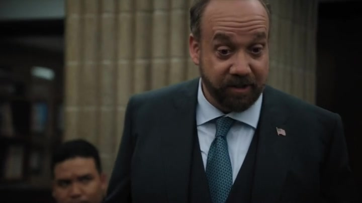

01
检察官办公室
他想毁掉对手，却忘了怎样赢

剧情事实查克向团队讲述自己少年下棋时，常因鄙视对手而陷入愤怒，忽视防守。他判断阿克斯借唐尼提供无法在庭上确认的信息，承认自己失策，并预告司法部长办公室将把案件转走，由自己承担责任。[1][2]
这一场为什么重要 · 个人解读
这不是客套的失败总结。他准确说出一个反复出现的盲点：把击败对手改写成让对手受到羞辱，就会放弃胜利需要的耐心。此刻对唐尼安排的说明仍是查克的推断；接下来的插叙才让观众得到独立信息。公共目标与私人怒火，开始被他自己分开。
因此 → 案件的失去迫使他先承认自己的判断错误。